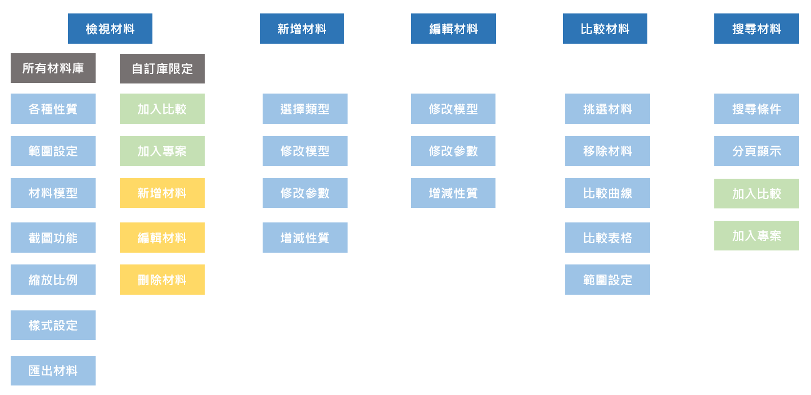

Polymer and non-polymer material database
Moldex3D材料精靈是一款協助模流分析工程師檢索化工材料的平台，除了可以檢視材料的各種物理性質外，還提供編輯材料參數、比較材料、搜尋材料等服務。而2023版的材料精靈相較於2022版，更是一全新大升級，從使用者研究出發分析使用上的盲點，進行風格、體驗上的優化。
研究新手和專家CAE工程師、材料研究員在操作2022材料精靈上的易用性問題、以及他們對使用上的期待，建立顧客旅程圖。同時評估2022材料精靈的功能地圖，重新規劃最佳的操作流程。
根據使用者研究分析結果，產生數個UI設計方針(Design Guidelines)，並透過Figma和AdobeXD規劃優化後的介面雛形。過程中反覆與使用者族群討論並迭代設計，確保成果及時響應訴求。
兼顧前端程式開發的角色，完成材料精靈中「編輯和新增材料」的功能，取得材料參數，提供使用者修改參數後，回傳參數給後端完成編輯材料的流程。以現代化UI框架與元件庫完成介面建構。
2022版的軟體在使用功能與顯示效果上有諸多限制，導致使用者無法有效率地完成材料檢索。依據易用性測試和自主測試，大致列出以下主要痛點：
檢視材料：調整各軸資料顯示範圍的功能不明確
比較材料：允許比較的數量受限、功能入口不明確、無法比較所有性質
搜尋材料：進階搜尋條件太少、功能入口不明確、無法排序結果
編輯材料：無法快速挑選要編修的步驟直接編輯、加密參數非全域功能
新增材料：新增的材料類型層次不清楚
依照使用者訪談結果，可以將材料精靈的使用者大致分成新手與專家。點選以下按鈕可查看各自的人物誌：
依照使用者訪談結果，可以將材料精靈的使用者大致分成新手與專家。點選以下按鈕可查看各自的人物誌：
將預期的功能歸納成系統優化方向，平行和垂直展開優化版材料精靈支援的功能
依序將使用者提出的需求和問題分類，並計算嚴重性和數量，由此可見在優化方向需要注重的功能(面積越大者)
材料精靈提供了多種材料的資訊。材料清單使用樹狀層次組件顯示，而材料的屬性則使用分頁組件橫向排列。材料數據以折線圖的形式將資料進行視覺化呈現。
材料精靈還提供了材料數據編輯功能。使用步驟組件，列出材料的性質，並使用表格組件顯示每個性質的參數。當用戶完成所有步驟後，材料編輯就完成了。
選擇適當的材料對於模擬分析非常重要，材料精靈提供使用者可以比較高達10種材料，並一次呈現各個性質疊合的效果，讓使用者不用再一筆筆確認材料細節，而是可以透過比較功能一次同步看完全部。
可以點選以下功能按鈕，並在滑鼠移動到圖片上方用放大鏡檢視細節：